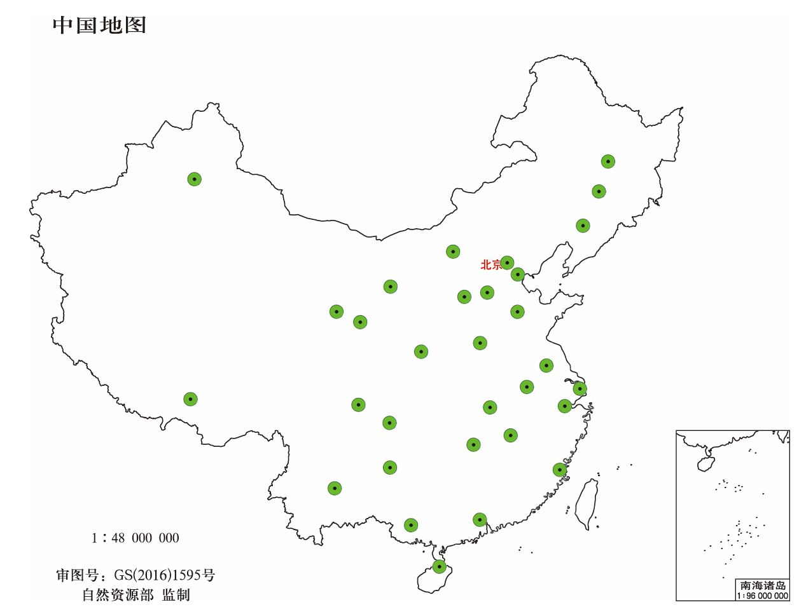
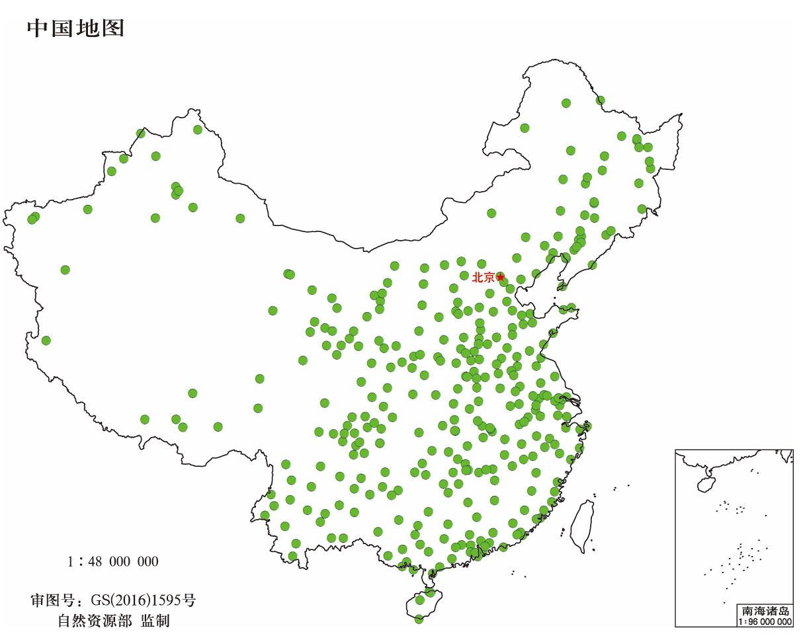
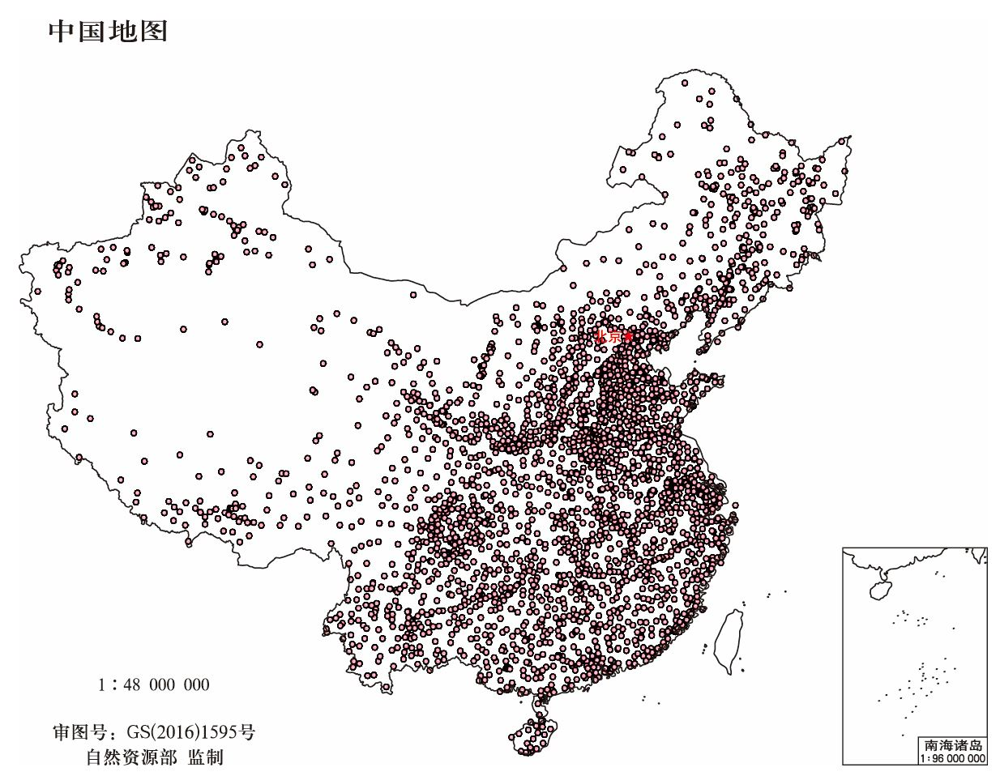
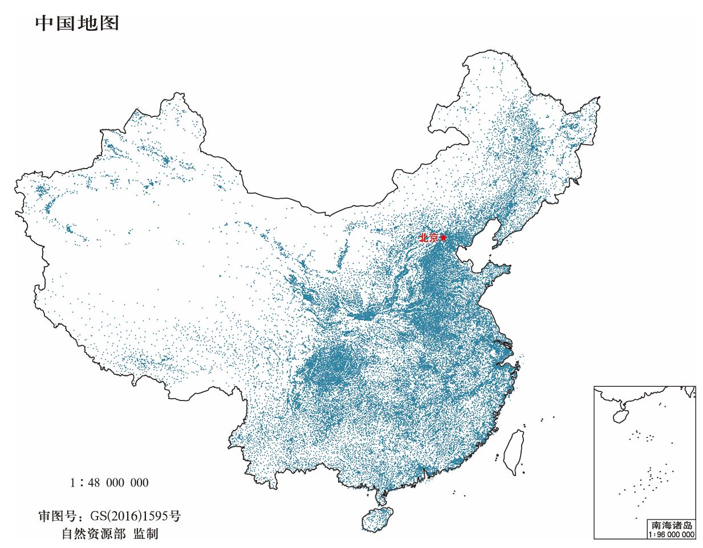

全国省、市、县、乡四级政府驻地经纬度坐标
Location of Provinces, Cities, Counties and Township in China
数据介绍
全国省级（省份直辖市自治区）、地市级（城市）、县级（区县）、乡级（乡镇街道）四级政府驻地经纬度坐标位置数据，不包含港澳台地区。
该数据可用于空间距离计算、地图制图等。
数据来源于国家统计局等官方网站（中华人民共和国民政部-中华人民共和国行政区划代码、中华人民共和国国家统计局-统计用区划和城乡划分代码）发布的相关信息，整理成格式化文本数据，然后通过地理编码等处理，制作形成空间分布矢量点数据。
全国村级（行政村）居民点数据可访问博客全国行政区划五级联动及村级居民点数据
数据属性
空间范围：全国（港澳台除外）
时间范围：2020年
空间分辨率：--
数据类型：矢量|ESRI Shapefile Point
投影坐标：WGS 84
数据示例图
本博客地图是在国家有关地图编制标准基础上绘制。
温馨提示：编制地图，应当执行国家有关地图编制标准，遵守国家有关地图内容表示的规定。
点击访问标准地图服务系统
| 全国省政府驻地 | 全国市政府驻地 |
|  |  |
| 全国区县政府驻地 | 全国乡镇政府驻地 |
|  |  |
数据下载
提供Text | csv 和 ESRI | shapefile 格式的数据下载
由于乡镇级政府驻地数据量较大，为了限制数据下载流量，仅免费提供分省的数据下载
如果需要全国范围的乡镇级政府驻地位置数据，可通过邮箱 gispie@163.com、QQ 2783343898 或 新浪微博私信@斩之浪 申请获取下载口令。
分批上传各省的乡镇级政府驻地数据，如果下载失败，请在页面下方留言说明需要的省份，我会优先上传！
全国省、市、县、乡四级政府驻地位置数据（不含港澳台）
建议使用Google浏览器，IE内核浏览器可能不正常显示下载按钮等！
Fighting, GISer!
最新博文